Theophylline, warfarin and mavoglurant
Source:vignettes/articles/pharmacometrics.Rmd
pharmacometrics.Rmd[1] TRUE TRUE TRUE TRUE TRUE TRUE TRUE TRUE TRUE TRUE TRUE TRUE TRUE TRUE TRUE [16] TRUE TRUE TRUE TRUE TRUE TRUE
Shows: randomEffects(), em(),
plotVPC(), plotResiduals(),
plotRandomEffects().
Theophylline, warfarin PK/PD and mavoglurant with occasions: FOCEI and SAEM multistarts and the diagnostics of the fits.
Files
| file | content |
|---|---|
analysis.R |
the analysis, shown below |
results/cache.rds |
saved fits; delete it to fit again, on Windows with
cores <- 1 in analysis.R, where
parallel::mclapply() runs on one core only |
theophyllineMultistart.R |
multistarts of the theophylline model by FOCEI, quadrature and SAEM,
saves results/multistart.rds for the guide |
Run
With this folder as working directory:
source("analysis.R").
library(dMod2)
dir.create("build", showWarnings = FALSE)
# generated sources and shared objects in build/, reused when nothing changed
options(dMod2.outdir = "build")
cores <- max(1L, min(20L, parallel::detectCores() - 2L))
nstart <- 100L
# second derivatives forward over reverse for FOCEI, forward over forward for the reported Hessian
dm <- c("forward", "reverse", "forward-reverse")
# fits are saved in results/cache.rds under a key and read from there when present; delete the
# file to fit everything again
cached <- function(key, expr) {
file <- "results/cache.rds"
dir.create("results", showWarnings = FALSE)
store <- if (file.exists(file)) readRDS(file) else list()
if (is.null(store[[key]])) {
store[[key]] <- expr
saveRDS(store, file)
}
store[[key]]
}
# a fit of em() cached without the model, which an evaluation at the fit estimates restores
cachedEm <- function(key, obj, random, start, control = list(), ...) {
model <- c("design", "prdfn", "errfn", "data")
f <- cached(key, { f <- em(obj, random, start, control = control, ...); f[model] <- NULL; f })
f[model] <- em(obj, random, f, control = modifyList(control, list(trustControl = list(iterlim = 0),
boundary = FALSE)),
verbose = FALSE)[model]
f
}Multistarts
The starts: the initial values on the log scale and
nstart - 1 draws around them, N(0, 0.5) per parameter.
Every fit runs on one core, nstart fits on
cores cores at once.
drawStarts <- function(init, n = nstart) {
set.seed(1)
rbind(init, t(vapply(seq_len(n - 1L), function(i) init + rnorm(length(init), 0, 0.5), init)))
}
# dMod2 from every start; the fits as a table of -2 log L, convergence, seconds and estimates
runDMod2 <- function(obj, random, starts, method) {
out <- parallel::mclapply(seq_len(nrow(starts)), function(i) {
options(dMod2.cores = 1L)
set.seed(i)
t <- system.time(f <- tryCatch(em(obj, random, starts[i, ], method = method, verbose = FALSE),
error = function(e) NULL))[["elapsed"]]
if (is.null(f)) return(list(value = NA_real_, converged = FALSE, seconds = t, argument = NULL))
list(value = f$value, converged = isTRUE(f$converged), seconds = t, argument = f$argument)
}, mc.cores = cores, mc.preschedule = FALSE)
data.frame(package = "dMod2", start = seq_along(out), value = vapply(out, `[[`, 0, "value"),
converged = vapply(out, `[[`, TRUE, "converged"), seconds = vapply(out, `[[`, 0, "seconds"))
}
# per method the best value, the starts within 0.1 of it, the failed and unconverged fits, the
# median and total seconds per fit; `runs` a named list of the tables of runDMod2()
summarizeStarts <- function(runs) {
do.call(rbind, lapply(names(runs), function(m) {
r <- runs[[m]]
best <- min(r$value, na.rm = TRUE)
data.frame(method = m, best = best, hits = sum(r$value - best < 0.1, na.rm = TRUE),
failed = sum(is.na(r$value)), unconverged = sum(!r$converged & !is.na(r$value)),
medianSeconds = stats::median(r$seconds), totalSeconds = sum(r$seconds))
}))
}
# the waterfall of every method, a panel each, and the seconds per fit
plotStarts <- function(runs, title) {
w <- plotValues(runs, pseudoLog = TRUE) + ggplot2::labs(title = title)
seconds <- do.call(rbind, lapply(names(runs), function(m) data.frame(method = m, seconds = runs[[m]]$seconds)))
s <- ggplot2::ggplot(seconds, ggplot2::aes(method, seconds)) + ggplot2::geom_boxplot() +
ggplot2::scale_y_log10(labels = scales::label_log()) +
ggplot2::labs(x = NULL, y = "seconds per fit, one core") + theme_dMod2()
cowplot::plot_grid(w, s, nrow = 1, rel_widths = c(2, 1))
}
# -2 log L of FOCEI at given estimates, the definition under which the SAEM fits are compared
focei <- function(obj, random, pars)
em(obj, random, pars, control = list(trustControl = list(iterlim = 0)), verbose = FALSE)$value
# the multistarts of FOCEI and SAEM of one model, and the best SAEM fit with -2 log L of FOCEI at
# the SAEM estimates; `saem` the model SAEM fits
compareMethods <- function(runs, label, saem) {
runs <- list(FOCEI = runs$focei, SAEM = runs$saem)
print(summarizeStarts(runs))
print(plotStarts(runs, label))
sfit <- cachedEm(paste(label, "dMod2 saem best"), saem$obj, saem$random, saem$starts[which.min(runs$SAEM$value), ],
method = "saem", verbose = FALSE)
print(round(sfit$argument, 4))
print(c(SAEM = focei(saem$obj, saem$random, sfit$argument)))
invisible(NULL)
}Theophylline
Twelve subjects, one oral dose each, a one-compartment model with first-order absorption from a depot of volume 1 into the central compartment of volume V; absorption rate, volume and clearance vary between subjects.
data(Theoph, package = "datasets")
Theoph$Subject <- as.character(Theoph$Subject)
theoData <- as.datalist(data.frame(name = "cp", time = Theoph$Time, value = Theoph$conc, sigma = NA_real_,
condition = Theoph$Subject))
theoNet <- eqnlist() |>
assignCompartment(Ag = "depot") |>
assignCompartment(Cc = "central", volume = "V") |>
setCompartmentVolume(unit = "1") |>
addReaction("Ag", "Cc", "Ka * Ag", "absorption") |>
addReaction("Cc", "", "Cl * Cc", "elimination", rateCompartment = "unit")
theoNet#>
#> Compartments:
#> depot (V=1)
#> central (V=V)
#> unit (V=1)
#> States by compartment:
#> central: Cc
#> depot: Ag
#>
#> Check Educt -> Product Rate Description
#> 1 Ag -> Cc Ka * Ag absorption
#> 2 Cc -> Cl * Cc elimination
theoX <- Xs(odemodel(theoNet, modelname = "pm_theoph", compile = FALSE, deriv2 = TRUE, derivMode = dm))
theoG <- Y(c(cp = "Cc"), theoX, modelname = "pm_theoph_g", compile = FALSE, deriv2 = TRUE, derivMode = dm)
theoE <- Y(c(cp = "sigma"), theoG, attachInput = FALSE, modelname = "pm_theoph_e", compile = FALSE, deriv2 = TRUE,
derivMode = dm)
subjects <- sort(unique(Theoph$Subject))
theoTable <- data.frame(ID = subjects, dose = tapply(Theoph$Dose * Theoph$Wt, Theoph$Subject, `[`, 1)[subjects],
weight = tapply(Theoph$Wt, Theoph$Subject, `[`, 1)[subjects], row.names = subjects)
theoTrafo <- branch(define(NULL, "x <- x", x = c("Ka", "V", "Cl", "Ag", "Cc", "sigma")), table = theoTable)
theoTrafo <- insert(theoTrafo, "Ag <- dose", dose = dose)
theoTrafo <- insert(theoTrafo, "Cc <- 0")
theoTrafo <- insert(theoTrafo, "x <- exp(x)", x = c("Ka", "V", "Cl", "sigma"))
theoTrafo <- insert(theoTrafo, Ka + V + Cl ~ 1 + (1 | ID))
theoP <- P(theoTrafo, method = "explicit", modelname = "pm_theoph_p", compile = FALSE, deriv2 = TRUE, derivMode = dm)
compileSeconds <- c(theophylline = system.time(compile(theoX, theoG, theoE, theoP,
output = "pm_theoph_all"))[["elapsed"]])
theoObj <- normL2(theoData, theoG * theoX * theoP, errmodel = theoE)
theoRandom <- randomEffects(theoP)
theoStarts <- drawStarts(c(Ka = 0, V = 3, Cl = 0.7, sigma = log(0.5), omega_Ka_Ka = log(0.3),
omega_V_V = log(0.3), omega_Cl_Cl = log(0.3)))
theoRuns <- cached("Theophylline dMod2", list(focei = runDMod2(theoObj, theoRandom, theoStarts, "focei"),
saem = runDMod2(theoObj, theoRandom, theoStarts, "saem")))
theoFit <- cachedEm("Theophylline dMod2 focei best", theoObj, theoRandom,
theoStarts[which.min(theoRuns$focei$value), ], verbose = FALSE)
summary(theoFit)#> EM summary (focei): -2 log L 352.934381, converged TRUE, 36 iterations
#> without the 2 pi constant of the data (NONMEM OBJ): 110.334608
#>
#> Parameters:
#> estimate se rsePct
#> Ka -2.4670 0.05115 2.073
#> V 0.5201 0.19060 36.650
#> Cl 1.0020 0.06062 6.050
#> sigma -0.3443 0.06825 19.830
#> omega_Ka_Ka -7.9920 206.40000 2583.000
#> omega_V_V -0.5029 0.23080 45.890
#> omega_Cl_Cl -1.7620 0.21980 12.470
#>
#> Random effects:
#> type eta1 eta2 estimate se
#> sd Ka Ka 0.0003383 0.06984
#> sd V V 0.6047000 0.13960
#> sd Cl Cl 0.1717000 0.03774
#>
#> Shrinkage: eta_Ka = 0.998, eta_V = 0.005, eta_Cl = -0.005Diagnostics
plot(theoFit)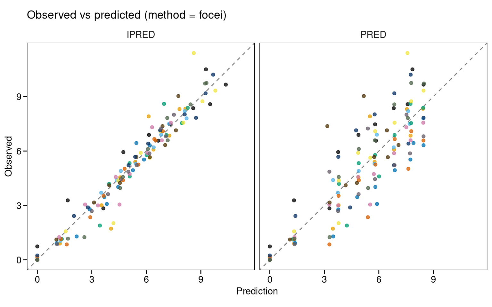
plotResiduals(theoFit, nsim = 500, seed = 1)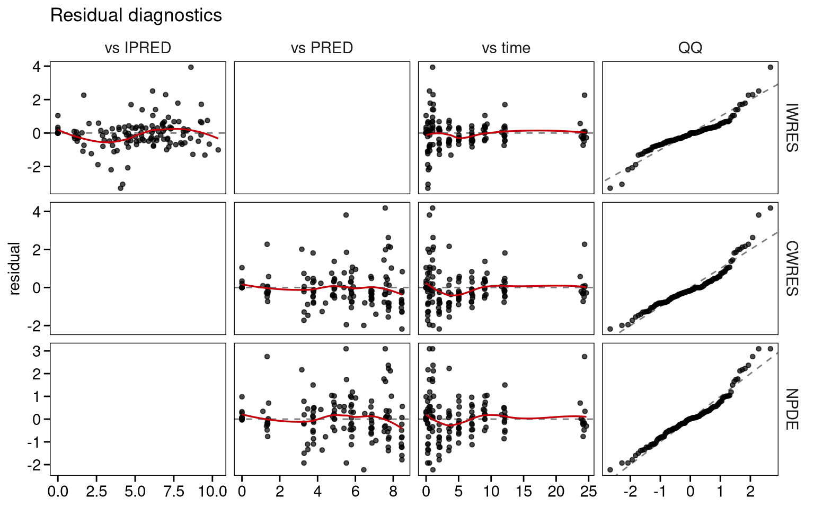
plotCombined(theoFit)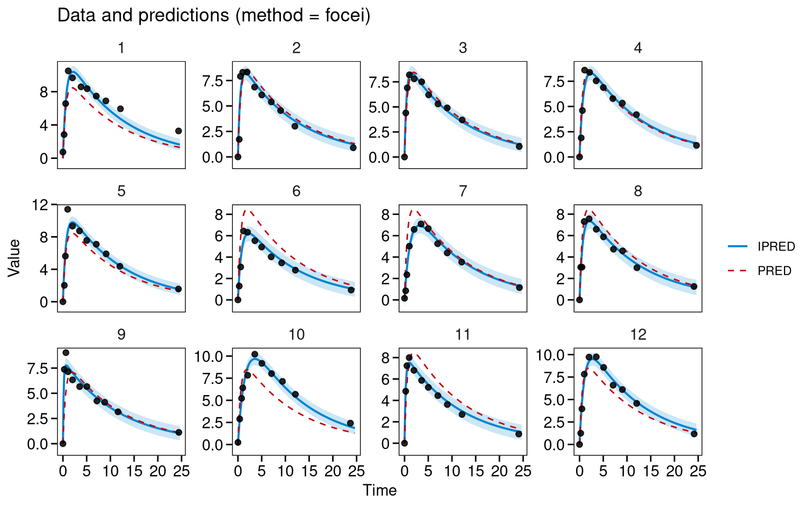
plotRandomEffects(theoFit)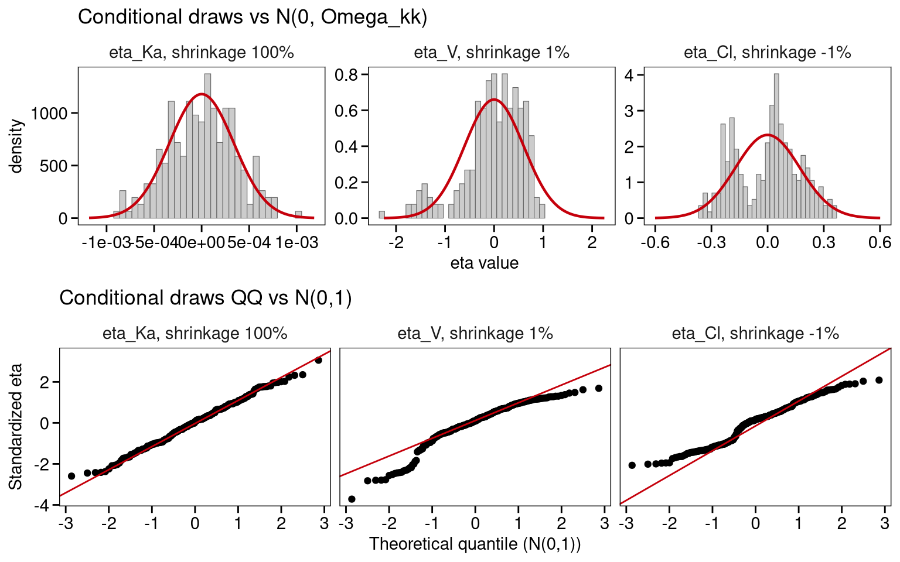
plotRandomEffects(theoFit, covariates = theoTable["weight"])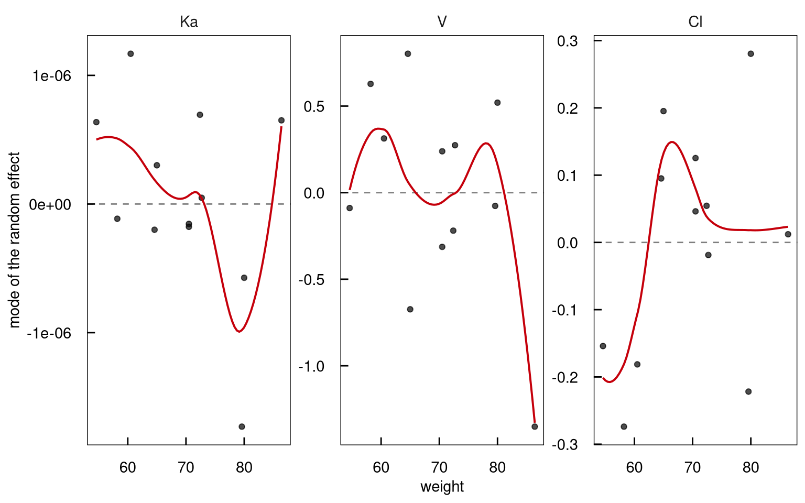
plotVPC(theoFit, nsim = 500, bins = 8, seed = 1)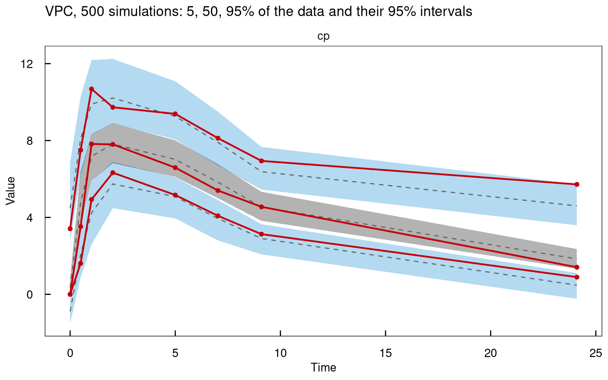
FOCEI and SAEM
compareMethods(theoRuns, "Theophylline", list(obj = theoObj, random = theoRandom, starts = theoStarts))#> method best hits failed unconverged medianSeconds totalSeconds
#> 1 FOCEI 352.9344 1 0 1 1.2330 130.224
#> 2 SAEM 354.9611 1 0 2 6.5515 671.326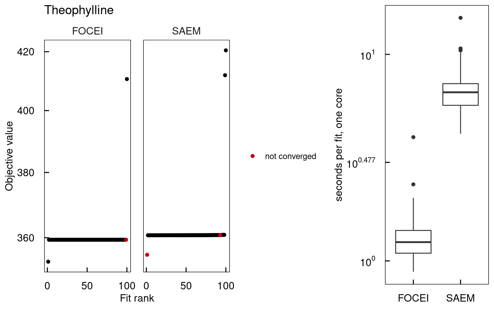
#> Ka V Cl sigma omega_Ka_Ka omega_V_V
#> -2.4710 0.5102 0.9982 -0.3452 -3.1265 -0.4928
#> omega_Cl_Cl
#> -1.7575
#> SAEM
#> 352.9441Warfarin
32 subjects, one oral dose; the plasma concentration cp
and the prothrombin complex activity pca, whose synthesis
the concentration inhibits (a turnover model with maximal inhibition 1).
Volume, clearance, baseline and turnover rate of the activity vary
between subjects.
data(warfarin)
warfData <- as.datalist(warfarin, splitBy = "condition", keepCovariates = c("dose", "wt", "age", "sex"))
warfNet <- eqnlist() |>
assignCompartment(Ag = "depot") |>
assignCompartment(Cc = "central", volume = "V") |>
assignCompartment(PCA = "effect") |>
setCompartmentVolume(unit = "1") |>
addReaction("Ag", "Cc", "Ka * Ag", "absorption") |>
addReaction("Cc", "", "Cl * Cc", "elimination", rateCompartment = "unit") |>
addReaction("", "PCA", "kout * pca0 * IC50 / (IC50 + Cc)", "synthesis") |>
addReaction("PCA", "", "kout * PCA", "degradation")
warfNet#>
#> Compartments:
#> depot (V=1)
#> central (V=V)
#> effect (V=1)
#> unit (V=1)
#> States by compartment:
#> central: Cc
#> depot: Ag
#> effect: PCA
#>
#> Check Educt -> Product Rate Description
#> 1 Ag -> Cc Ka * Ag absorption
#> 2 Cc -> Cl * Cc elimination
#> 3 -> PCA kout * pca0 * IC50 / (IC50 + Cc) synthesis
#> 4 PCA -> kout * PCA degradation
warfX <- Xs(odemodel(warfNet, modelname = "pm_warf", compile = FALSE, deriv2 = TRUE, derivMode = dm))
warfG <- Y(c(cp = "Cc", pca = "PCA"), warfX, modelname = "pm_warf_g", compile = FALSE, deriv2 = TRUE,
derivMode = dm)
# the error of cp combined from an absolute and a relative part, positive also where the solver
# leaves cp at or below 0
warfE <- Y(c(cp = "sqrt(sigma_cp_abs^2 + (sigma_cp_rel * cp)^2)", pca = "sigma_pca"), warfG,
attachInput = FALSE, modelname = "pm_warf_e", compile = FALSE, deriv2 = TRUE, derivMode = dm)
warfTable <- attr(warfData, "condition.grid")
warfTable$ID <- rownames(warfTable)
warfTrafo <- branch(define(NULL, "x <- x", x = c("Ka", "V", "Cl", "IC50", "kout", "pca0", "Ag", "Cc", "PCA",
"sigma_cp_abs", "sigma_cp_rel", "sigma_pca")), table = warfTable)
warfTrafo <- insert(warfTrafo, "Ag <- d", d = dose)
warfTrafo <- insert(warfTrafo, "Cc <- 0")
warfTrafo <- insert(warfTrafo, "PCA <- pca0")
warfTrafo <- insert(warfTrafo, "x <- exp(x)", x = c("Ka", "V", "Cl", "IC50", "kout", "pca0", "sigma_cp_abs",
"sigma_cp_rel", "sigma_pca"))
warfTrafo <- insert(warfTrafo, V + Cl + pca0 + kout ~ 1 + (1 | ID))
warfP <- P(warfTrafo, method = "explicit", modelname = "pm_warf_p", compile = FALSE, deriv2 = TRUE, derivMode = dm)
compileSeconds["warfarin"] <- system.time(compile(warfX, warfG, warfE, warfP, output = "pm_warf_all"))[["elapsed"]]
warfObj <- normL2(warfData, warfG * warfX * warfP, errmodel = warfE)
warfRandom <- randomEffects(warfP)
warfStarts <- drawStarts(c(Ka = 0, V = 2, Cl = -2, IC50 = 0, kout = -3, pca0 = 4.6, sigma_cp_abs = log(0.1),
sigma_cp_rel = log(0.1),
sigma_pca = log(5), omega_V_V = log(0.3), omega_Cl_Cl = log(0.3),
omega_pca0_pca0 = log(0.3), omega_kout_kout = log(0.3)))
warfRuns <- cached("Warfarin dMod2", list(focei = runDMod2(warfObj, warfRandom, warfStarts, "focei"),
saem = runDMod2(warfObj, warfRandom, warfStarts, "saem")))
warfFit <- cachedEm("Warfarin dMod2 focei best", warfObj, warfRandom,
warfStarts[which.min(warfRuns$focei$value), ], verbose = FALSE)
summary(warfFit)#> EM summary (focei): -2 log L 2395.005082, converged TRUE, 35 iterations
#> without the 2 pi constant of the data (NONMEM OBJ): 1514.661967
#>
#> Parameters:
#> estimate se rsePct
#> Ka -0.6692 0.09290 13.8800
#> V 2.0220 0.05176 2.5600
#> Cl -1.9890 0.05572 2.8010
#> IC50 0.1205 0.05134 42.5900
#> kout -2.9880 0.02700 0.9038
#> pca0 4.5710 0.01228 0.2686
#> sigma_cp_abs 0.0654 0.13730 209.9000
#> sigma_cp_rel -1.8420 0.13860 7.5220
#> sigma_pca 1.3730 0.08206 5.9750
#> omega_V_V -1.4310 0.16520 11.5500
#> omega_Cl_Cl -1.2590 0.13790 10.9500
#> omega_pca0_pca0 -2.8960 0.18790 6.4870
#> omega_kout_kout -2.5120 0.33200 13.2200
#>
#> Random effects:
#> type eta1 eta2 estimate se
#> sd V V 0.23910 0.03951
#> sd Cl Cl 0.28410 0.03916
#> sd pca0 pca0 0.05524 0.01038
#> sd kout kout 0.08113 0.02694
#>
#> Shrinkage: eta_V = 0.136, eta_Cl = 0.034, eta_pca0 = 0.165, eta_kout = 0.360Diagnostics
plot(warfFit)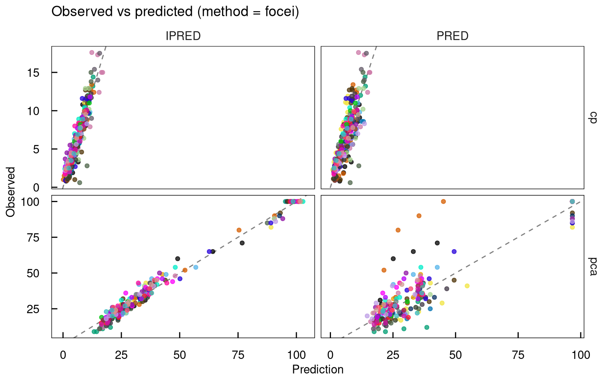
plotResiduals(warfFit, nsim = 500, seed = 1)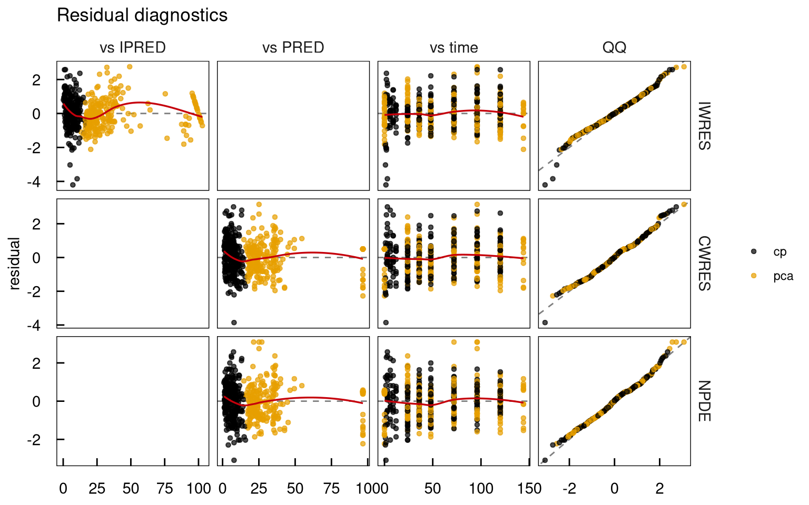
plotCombined(warfFit, conditionsPerPage = 8)[[1]]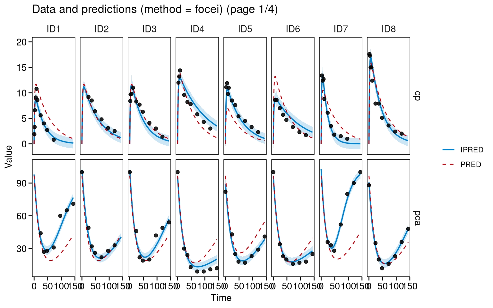
plotRandomEffects(warfFit)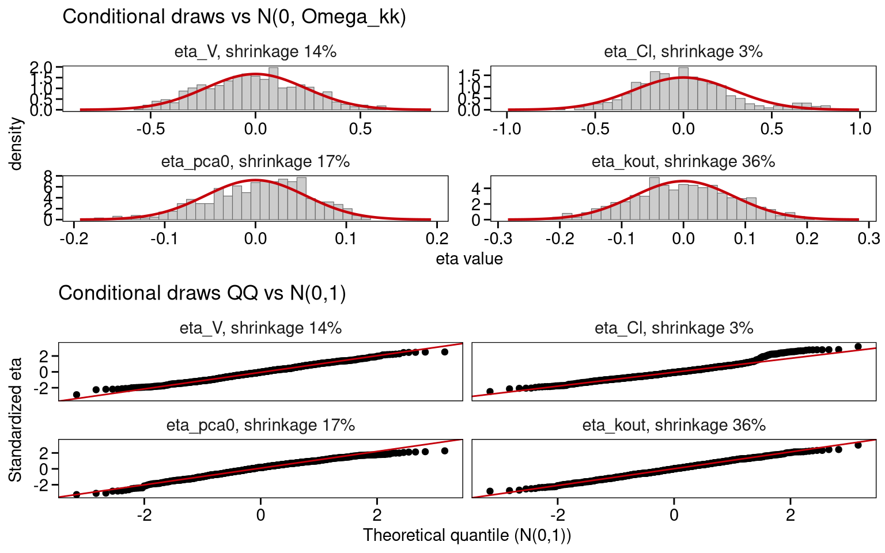
plotRandomEffects(warfFit, covariates = c("wt", "age", "sex"))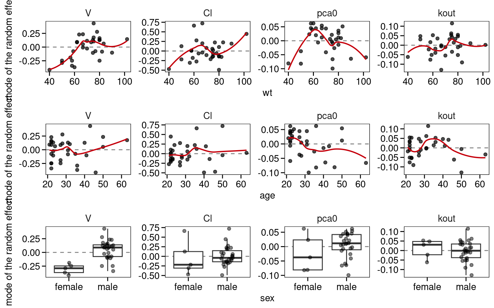
plotVPC(warfFit, nsim = 500, bins = 8, seed = 1)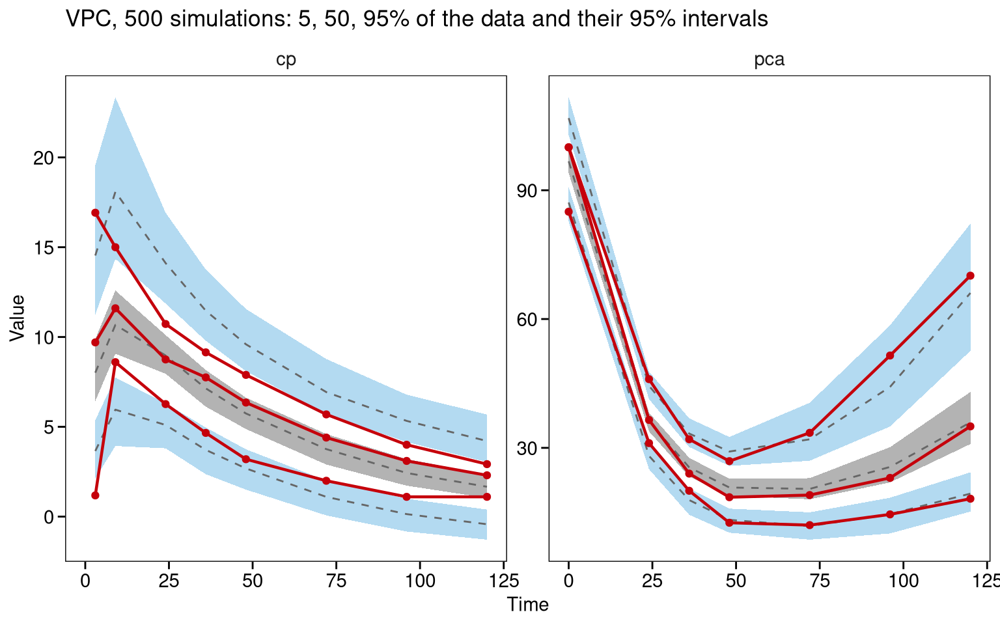
FOCEI and SAEM
The SAEM fits run all 500 iterations and end unconverged: the
expected increase of -2 log L from the Monte Carlo error of the averaged
estimate stays above mcTol (0.05).
compareMethods(warfRuns, "Warfarin", list(obj = warfObj, random = warfRandom, starts = warfStarts))#> method best hits failed unconverged medianSeconds totalSeconds
#> 1 FOCEI 2395.005 99 0 0 11.8435 1243.297
#> 2 SAEM 2395.739 53 0 100 55.7525 5570.971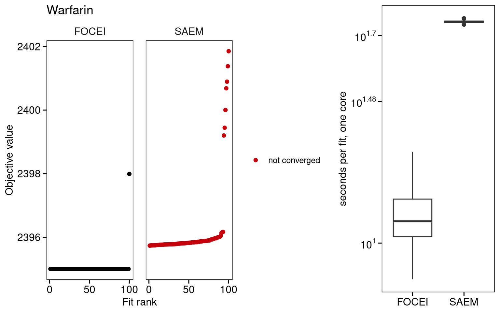
#> Ka V Cl IC50 kout
#> -0.6439 2.0381 -2.0060 0.1536 -2.9708
#> pca0 sigma_cp_abs sigma_cp_rel sigma_pca omega_V_V
#> 4.5715 -0.0657 -1.7808 1.4514 -1.4698
#> omega_Cl_Cl omega_pca0_pca0 omega_kout_kout
#> -1.2701 -2.8746 -2.7625
#> SAEM
#> 2396.107Mavoglurant
120 subjects, an infusion of 10 min (20 min in one occasion) as a
time switch, 78 subjects on two occasions. Two compartments; clearances
scale with weight to the power 0.75, volumes with weight. Clearance, the
central and peripheral volume and the intercompartmental clearance vary
between subjects, the clearance also between the occasions of a subject,
(1 | ID:OCC). SAEM fits the model without the variability
between occasions.
data(mavoglurant)
mavoData <- as.datalist(mavoglurant, splitBy = "condition",
keepCovariates = c("ID", "OCC", "dose", "duration", "AGE", "SEX", "WT", "HT"))
mavoNet <- eqnlist() |>
assignCompartment(C1 = "central", volume = "V1") |>
assignCompartment(C2 = "peripheral", volume = "V2") |>
setCompartmentVolume(unit = "1") |>
addReaction("", "C1", "piecewise(dose / duration, time < duration, 0)", "infusion", rateCompartment = "unit") |>
addReaction("C1", "", "CL * C1", "elimination", rateCompartment = "unit") |>
addReaction("C1", "C2", "Q * C1", "distribution", rateCompartment = "unit") |>
addReaction("C2", "C1", "Q * C2", "redistribution", rateCompartment = "unit")
mavoNet#>
#> Compartments:
#> central (V=V1)
#> peripheral (V=V2)
#> unit (V=1)
#> States by compartment:
#> central: C1
#> peripheral: C2
#>
#> Check Educt -> Product Rate
#> 1 -> C1 piecewise(dose / duration, time < duration, 0)
#> 2 C1 -> CL * C1
#> 3 C1 -> C2 Q * C1
#> 4 C2 -> C1 Q * C2
#> Description
#> 1 infusion
#> 2 elimination
#> 3 distribution
#> 4 redistribution
# solver tolerances 1e-10: at the defaults the solver error, absolute in mg/L, moves -2 log L by
# about 1e-3, more than the fit resolves
mavoX <- Xs(odemodel(mavoNet, modelname = "pm_mavo", compile = FALSE, deriv2 = TRUE, derivMode = dm),
options = list(atol = 1e-10, rtol = 1e-10))
# the dose in mg, the concentration in ng/mL
mavoG <- Y(c(cp = "1000 * C1"), mavoX, modelname = "pm_mavo_g", compile = FALSE, deriv2 = TRUE, derivMode = dm)
mavoE <- Y(c(cp = "sqrt(sigma_abs^2 + (sigma_rel * cp)^2)"), mavoG, attachInput = FALSE, modelname = "pm_mavo_e",
compile = FALSE, deriv2 = TRUE, derivMode = dm)
mavoTable <- attr(mavoData, "condition.grid")
mavoTable$ID <- as.character(mavoTable$ID)
mavoTrafo <- function(between) {
tr <- branch(define(NULL, "x <- x", x = c("CL", "V1", "Q", "V2", "C1", "C2", "dose", "duration", "sigma_abs",
"sigma_rel")),
table = mavoTable)
tr <- insert(tr, "dose <- d", d = dose)
tr <- insert(tr, "duration <- u", u = duration)
tr <- insert(tr, "x <- 0", x = c("C1", "C2"))
tr <- insert(tr, "x <- x * (w / 70)^0.75", x = c("CL", "Q"), w = WT)
tr <- insert(tr, "x <- x * w / 70", x = c("V1", "V2"), w = WT)
tr <- insert(tr, "x <- exp(x)", x = c("CL", "V1", "Q", "V2", "sigma_abs", "sigma_rel"))
if (between) tr <- insert(tr, CL ~ 1 + (1 | ID) + (1 | ID:OCC)) else tr <- insert(tr, CL ~ 1 + (1 | ID))
insert(tr, V1 + Q + V2 ~ 1 + (1 | ID))
}
mavoP <- P(mavoTrafo(TRUE), method = "explicit", modelname = "pm_mavo_p", compile = FALSE, deriv2 = TRUE,
derivMode = dm)
mavoP1 <- P(mavoTrafo(FALSE), method = "explicit", modelname = "pm_mavo_p1", compile = FALSE, deriv2 = TRUE,
derivMode = dm)
compileSeconds["mavoglurant"] <- system.time(compile(mavoX, mavoG, mavoE, mavoP, mavoP1,
output = "pm_mavo_all"))[["elapsed"]]
mavoObj <- normL2(mavoData, mavoG * mavoX * mavoP, errmodel = mavoE)
mavoObj1 <- normL2(mavoData, mavoG * mavoX * mavoP1, errmodel = mavoE)
mavoRandom <- randomEffects(mavoP)
mavoRandom1 <- randomEffects(mavoP1)
mavoRandom#> Random effects: 5 terms over ID, ID:OCC
#> block 1 (normal, ID): eta_CL
#> block 2 (normal, ID:OCC): eta_CL_ID_OCC
#> block 3 (normal, ID): eta_V1
#> block 4 (normal, ID): eta_Q
#> block 5 (normal, ID): eta_V2
#> fixed effects: CL, V1, Q, V2
mavoInit <- c(CL = log(30), V1 = log(40), Q = log(30), V2 = log(150), sigma_abs = log(1), sigma_rel = log(0.2),
omega_CL_CL = log(0.3),
omega_V1_V1 = log(0.3), omega_Q_Q = log(0.3), omega_V2_V2 = log(0.3))
mavoStarts <- drawStarts(c(mavoInit, omega_CL_ID_OCC_CL_ID_OCC = log(0.15)))
mavoStarts1 <- mavoStarts[, names(mavoInit)]
mavoRuns <- cached("Mavoglurant dMod2", list(focei = runDMod2(mavoObj, mavoRandom, mavoStarts, "focei"),
saem = runDMod2(mavoObj1, mavoRandom1, mavoStarts1, "saem")))
mavoFit <- cachedEm("Mavoglurant dMod2 focei best", mavoObj, mavoRandom,
mavoStarts[which.min(mavoRuns$focei$value), ], verbose = FALSE)
summary(mavoFit)#> EM summary (focei): -2 log L 21597.788355, converged TRUE, 19 iterations
#> without the 2 pi constant of the data (NONMEM OBJ): 17137.260715
#>
#> Parameters:
#> estimate se rsePct
#> CL 3.2250 0.02605 0.8079
#> V1 3.9180 0.02413 0.6160
#> Q 3.2400 0.03597 1.1100
#> V2 4.8200 0.03528 0.7319
#> sigma_abs -0.4331 0.22240 51.3500
#> sigma_rel -1.8050 0.01801 0.9981
#> omega_CL_CL -1.2880 0.06939 5.3870
#> omega_V1_V1 -1.3920 0.07309 5.2500
#> omega_Q_Q -1.0140 0.07654 7.5510
#> omega_V2_V2 -1.0130 0.07194 7.1000
#> omega_CL_ID_OCC_CL_ID_OCC -2.7500 0.12670 4.6060
#>
#> Random effects:
#> grouping type eta1 eta2 estimate se
#> ID sd CL CL 0.27580 0.01914
#> ID sd V1 V1 0.24850 0.01816
#> ID sd Q Q 0.36290 0.02778
#> ID sd V2 V2 0.36300 0.02612
#> ID:OCC sd CL_ID_OCC CL_ID_OCC 0.06395 0.00810
#>
#> Shrinkage: ID: eta_CL = 0.029, ID: eta_V1 = 0.051, ID: eta_Q = 0.066, ID: eta_V2 = 0.045, ID:OCC: eta_CL_ID_OCC = 0.470
compileSeconds#> theophylline warfarin mavoglurant
#> 27.201 33.187 100.286Diagnostics
plot(mavoFit)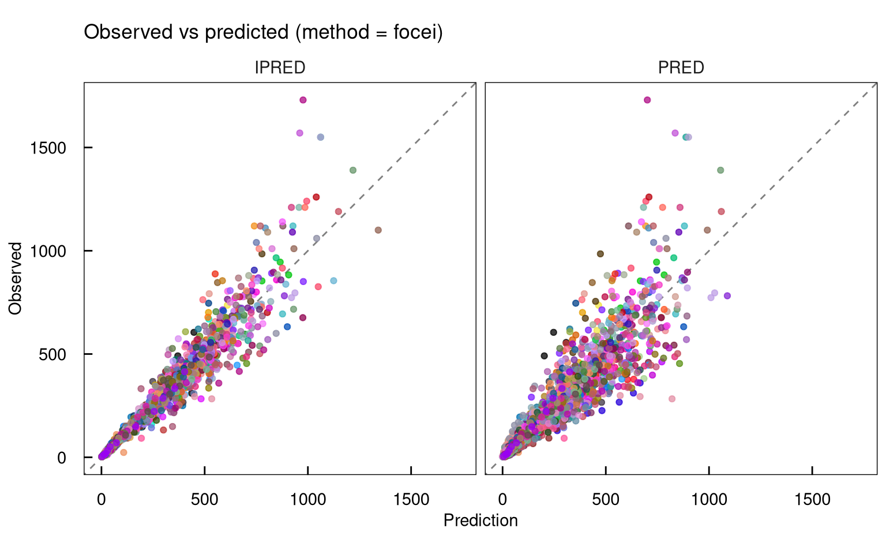
plotResiduals(mavoFit, nsim = 200, seed = 1)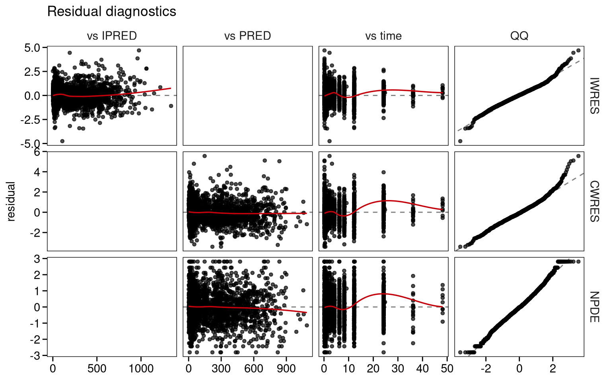
plotCombined(mavoFit, conditionsPerPage = 12)[[1]]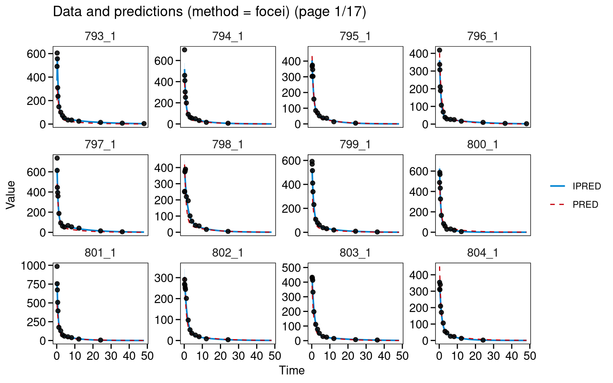
plotRandomEffects(mavoFit)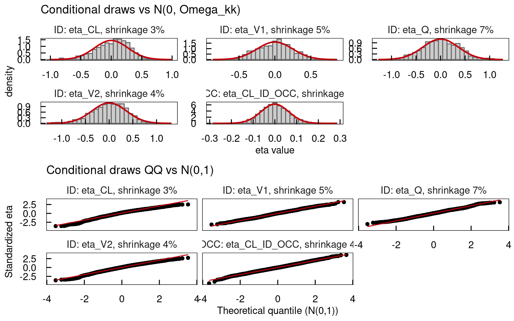
plotRandomEffects(mavoFit, covariates = c("WT", "AGE", "SEX", "HT"))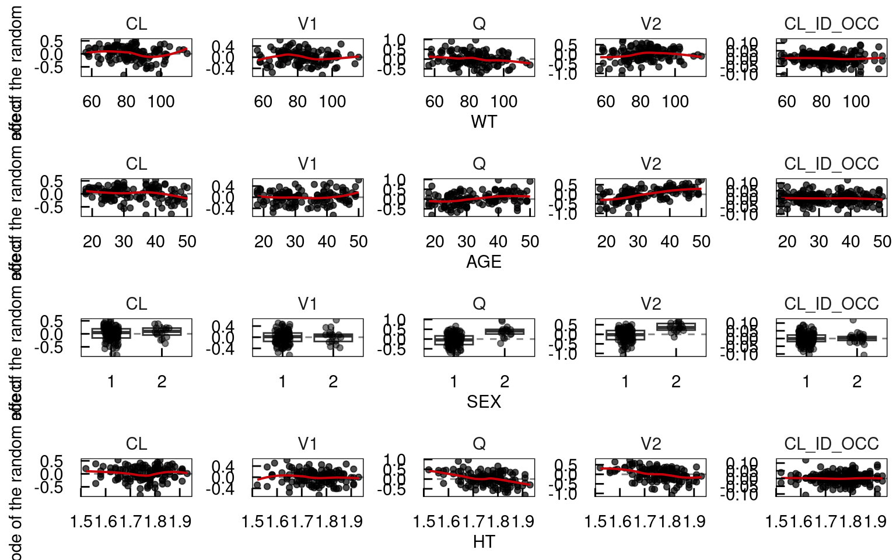
plotVPC(mavoFit, nsim = 200, bins = 8, pc = TRUE, strata = "dose", seed = 1)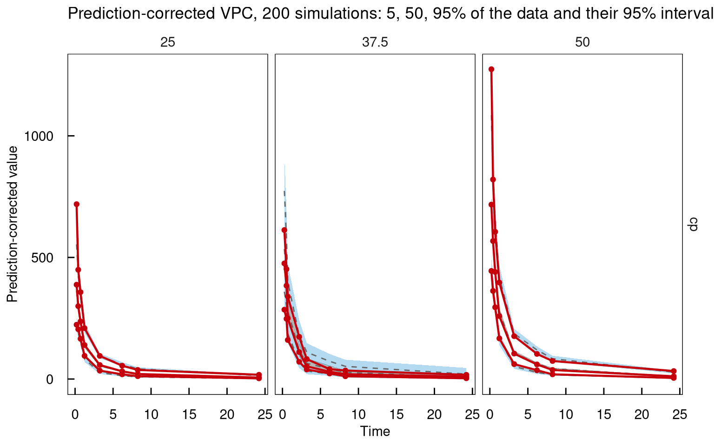
FOCEI and SAEM
compareMethods(mavoRuns, "Mavoglurant", list(obj = mavoObj1, random = mavoRandom1, starts = mavoStarts1))#> method best hits failed unconverged medianSeconds totalSeconds
#> 1 FOCEI 21597.79 69 0 1 131.9365 14084.02
#> 2 SAEM 21627.67 20 0 29 374.3300 41735.39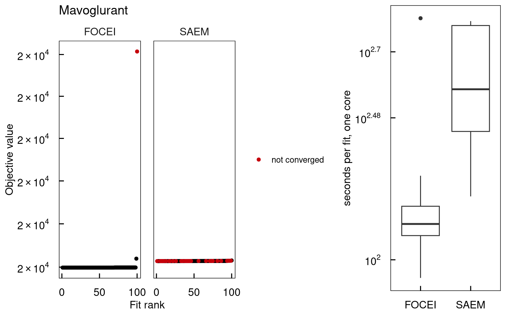
#> CL V1 Q V2 sigma_abs sigma_rel
#> 3.2239 3.9139 3.2508 4.8280 -0.0998 -1.7800
#> omega_CL_CL omega_V1_V1 omega_Q_Q omega_V2_V2
#> -1.2635 -1.3839 -1.0113 -1.0113
#> SAEM
#> 21650.39